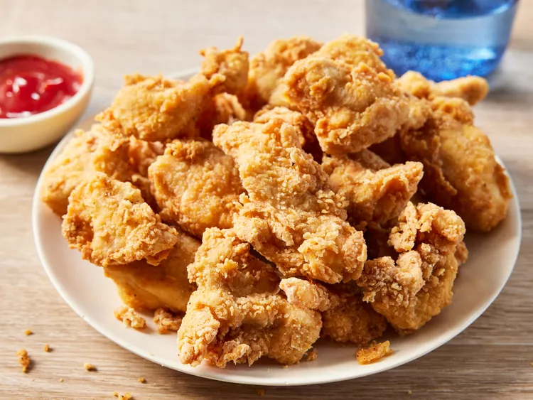

Chicken Nuggets

The best chicken nuggets ever, by some reports (credit: Allrecipes)
Ingredients
vegetable oil for frying
4 cups all-purpose flour
6 tablespoons garlic salt
3 tablespoons ground black pepper
4 large eggs, beaten
8 skinless, boneless chicken breast halves - cut into small chunks
Directions
- Gather all ingredients. Heat 1 inch oil in a large skillet or saucepan to 350 degrees F (175 degrees C).
- Stir together flour, garlic salt, and pepper in a bowl. Dip chicken pieces into beaten eggs, then press
each piece into flour mixture to coat well; shake off excess flour. Place coated chicken pieces onto a plate.
- Working in batches, fry chicken in hot oil until golden brown and no longer pink in the center.
- An instant-read thermometer inserted into the center should read at least 165 degrees F (74 degrees C). Serve and enjoy!